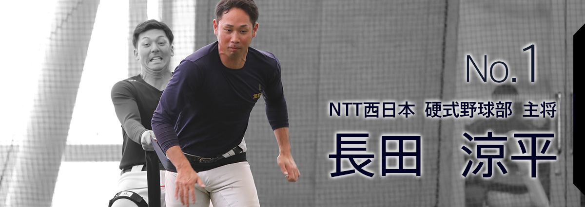

イントロダクション
Introduction
スローガン
今年キャプテンとなった長田選手、昨年に引き続き副キャプテンの中村選手、2年目にして副キャプテンに抜擢された濱田選手が考えた2018のスローガンは「覚悟 ～全ては勝つ為に～」。
昨年の都市対抗野球大会、日本選手権大会で1回戦敗退となった硬式野球部が1番の目標に掲げたのは「勝利」。
その思いをストレートな言葉で表現したスローガンだ。
しかし、短い言葉の中にも、秘められた思い、行動は奥深い。勝つために何をすれば良いのか、どう練習に向き合うのか、選手1人1人が考え、相談し、行動する事がとても大事になってくる。
今年の硬式野球部は、2年目の選手が3名、新人が8名、総勢11名が入部2年以内の若手選手であり、昨年4番打者の高本選手がコーチ専任に、5番打者の大城選手がプロ野球選手に、1塁レギュラーの赤嶺選手もコーチに就任するなど、主力選手が相次いで抜けている。高本コーチが「戦力がこんなに変わったチームは無いと思います」と言うほどに、チーム事情が変わってきた。
これまで全国レベルの大会に出場経験のある選手が減っていく中、今年も硬式野球部を任された大原監督は「チーム全体の底上げをしていくためには、個々の選手の力をアップしていく必要がある」と考え、「得点力を上げるために、昭和の野球ですが（笑）、キャンプ前には原点に戻って、とにかくバットを振ってきました。打つ力をつけることで、4番、5番に頼らなくとも良いチームを作りたい」という。
全国大会で勝ち上がるチームは1試合平均5点、失点1点とも言われ、硬式野球部は失点は抑えるも、得点がついてきていない現状を打破しようと、必死にバット振りまくる毎日だ。
“覚悟”
『今年はとにかく結果を出す覚悟、覚悟を決めてやっていく。攻めて攻めて勝ちをつかみ取る！』野球に熱い男新キャプテン長田選手が力強く語ってくれた。
三位一体

ベテランと中堅、若手選手が“勝つ”事だけを目標に力を合わせていくチーム。それが今年のNTT西日本硬式野球部だ。ベテランで注目株は梅津コーチ兼任選手と吉元投手。梅津選手は監督も「意識が高い」と絶賛するほど、良い動きを見せている。1月当初の練習はじめから全力でプレー出来る体に仕上げてくるほど、今年に懸ける意気込みを十分に感じられる。
吉元投手は全国トップクラスの投手であり、今年も投手陣の要となる。また、2人とも中堅、若手に対する積極的な声がけとアドバイスには余念が無い。
中堅クラスでは、6年目のキャプテン長田選手と5年目の副キャプテン中村選手がチームを引っ張っていく。2人とも「まずはチームの事を考え、個人はその次」というほど、フォア・ザ・チームの考え方を貫いている。
特に1塁にコンバート予定の長田選手は「1塁はやったことないですが、練習して、経験を積み重ねていきます」と謙遜するが、永松ヘッドコーチや昨年1塁のレギュラーだった高本コーチは「守備うまいですよ。ボールから逃げないですね。体を張って止めにいきます」と太鼓判。チーム1“熱い男”がプレーでもチームを勝利に導く。
中村副キャプテンは、「社会人野球というものを知らない選手もたくさんいる。怖いもの知らずでプレーしてくれたら良い面も出るだろうが、雰囲気にのまれて、弱い部分が出ないか心配」。そのためにキャプテンの考えを若手に浸透させていき、キャプテンのサポート役に徹すると決めている。
若手では、濱田副キャプテンに注目。新チームになってから就任を告げられたが、はじめは上の選手が多くて不安もあったという。新人も8名加入し、若手の意識をキャプテンやベテラン選手に伝えたいと、パイプ役を実践している。
気になるキャッチャーだが、昨年まで正捕手だった大城選手が退部したことについて、キャッチャー出身の大原監督は「特に不安はありません。新人もポテンシャルが高く、打撃力に定評のある田中選手、ベテランの北崎選手とベテラン、中堅、若手の3人で十分戦えます」と、ファンの不安を吹き飛ばしてくれるような頼もしい言葉を語ってくれた。
ベテラン、中堅、若手が個々の力をレベルアップさせ、融合し、勝利をつかみ取る。NTT西日本硬式野球部に新しい時代が訪れた。
今年の展望
This year's outlook
変化の兆し

これまで先制されるとなかなか勝てなかった試合が多い中、今年の初オープン戦では、先制点を許し、ノーヒットの試合展開のなか、1本のホームランがチームに勢いをつけ、初戦を勝利で飾った。
永松ヘッドコーチが「新チームとして取り組んでいることが出来たという感じ」と言うように、“勢い”も今年のキーワードになっている。大原監督も「全国大会は1発勝負の世界。若い、青いチームではあるが、勢いをつけて元気にプレーしていく。多少の失敗は勢いと元気でカバー出来る」とチームに勢いをつける事をキャンプで実践中だ。今年は、長田キャプテンを中心に勢いのある硬式野球部を見ることが出来るだろう。
取材まとめ
選手たちは勝ちに飢えている。勝つためにどうすれば良いか、個人が何をすれば良いか、チームとしてどうしたら良いかを模索しながら、キャンプに取り組んでいる。
チームが勝つことで満足するためだけでは無く、応援してくれている会社の仲間や家族、試合会場に足を運んでくれるファンのために「勝つ事を望んでいる」のである。
もともと明るい選手が多いので、練習の雰囲気は明るいが、笑顔の中に強い意志を感じられたキャンプ。
これからオープン戦やJABA大会を経て、最大の目標である都市対抗野球大会の予選に挑む硬式野球部。
勝利をつかみ取る瞬間を是非、球場で一緒に体験してください。


{kind=link}
{kind=link}
{kind=link}
{kind=link}
{kind=link}
{kind=link}
{kind=link}
{kind=link}
{kind=link}
{kind=link}
▲
Menu